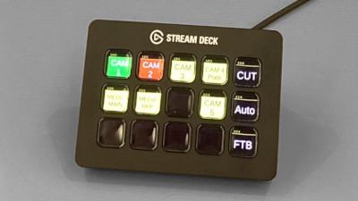
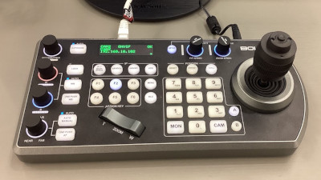

The below web apps are simulations of BAH AV components. Due to the shape and size of the devices, a tablet or desktop PC is recommended for best results. Contact your AV overseer for details. :)

Elgato StreamDeck simulator, for the "Switcher" operator.

Bolin PTZ controller sim, for the "Camera" operator.